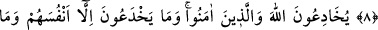
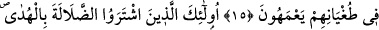

MÜNÂFIKLAR
8. İnsanlardan bâzıları da vardır ki, inanmadıkları halde “Allah’a ve âhıret
gününe inandık” derler.
9. Onlar (kendi akıllarınca) güya Allah’ı ve mü’minleri aldatırlar. Halbuki onlar
ancak kendilerini aldatırlar ve bunun farkında değillerdir.
10. Onların kalblerinde bir hastalık vardır. Allah da onların hastalığını
çoğaltmıştır. Söylemekte oldukları yalanlar sebebiyle de onlar için elîm bir azâb
vardır.
11. Onlara: Yeryüzünde fesat çıkarmayın, denildiği zaman; “Biz ancak ıslah
edicileriz” derler.
12. Şunu bilin ki, onlar bozguncuların ta kendileridir, lâkin anlamazlar.
13. Onlara: İnsanların îmân ettiği gibi siz de îmân edin, denildiği vakit: “Biz hiç,
sefîhlerin (akılsız ve ahmak kişilerin) îmân ettikleri gibi îmân eder miyiz!” derler.
Biliniz ki, sefîhler ancak kendileridir. Fakat bunu bilmezler (veya bilmezlikten
gelirler).
14. (Bu münâfıklar) mü’minlerle karşılaştıkları vakit “(Biz de) îmân ettik”
derler. (Kendilerini saptıran) şeytanları ile başbaşa kaldıklarında ise: Biz sizinle
beraberiz, biz onlarla (mü’minlerle) sâdece alay ediyoruz, derler.
15. Gerçekte, Allah onlarla istihzâ (alay) eder de azgınlıklarında onlara fırsat
verir, bu yüzden onlar bir müddet başıboş dolaşırlar.
16. İşte onlar, hidâyete karşılık dalâleti satın alanlardır. Ancak onların bu ticâreti